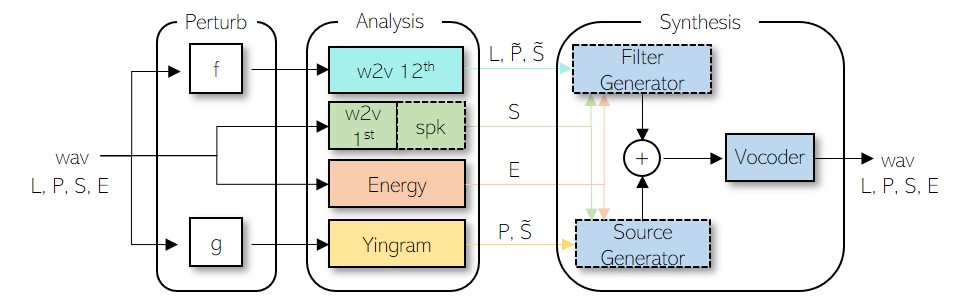
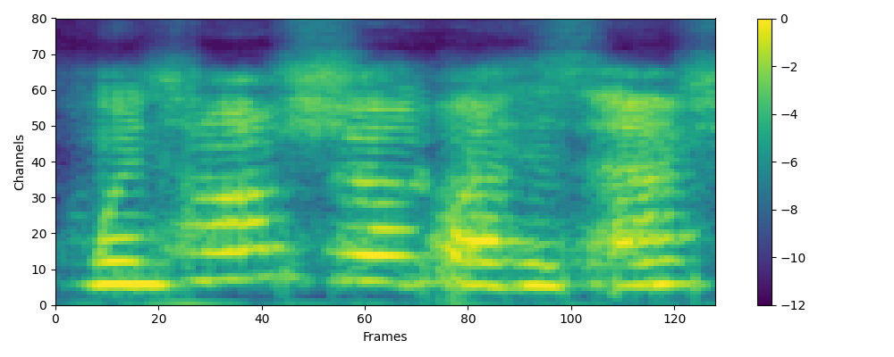
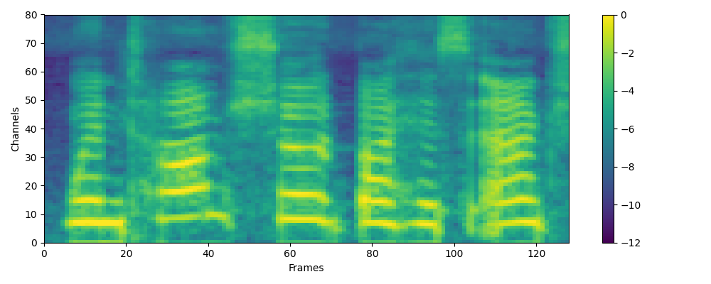
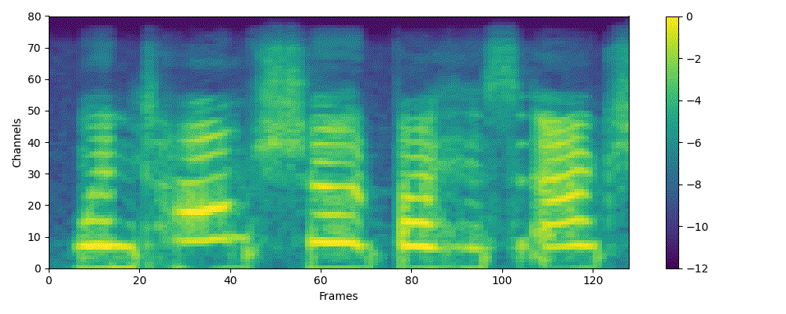
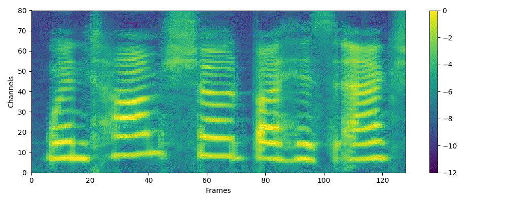
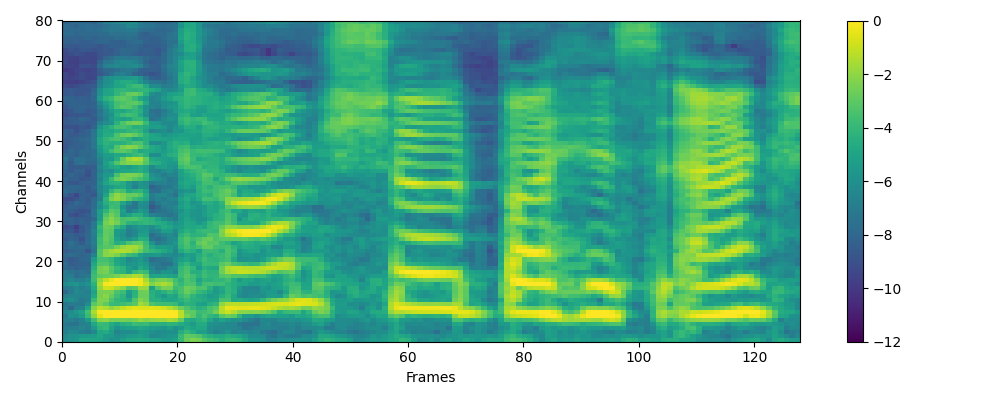
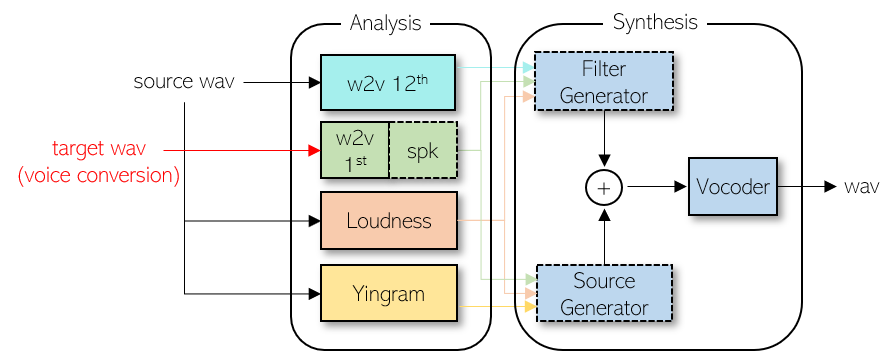
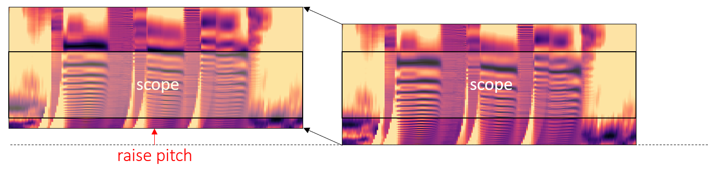
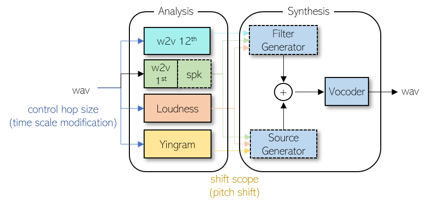

NANSY
Information perturbation

Original waveform
After f perturbation
After g perturbation

Formant shift
Formant shift from 1/range(1.8~1) + range(1~1.8)

Pitch shift
Pitch shft from 0 ~ 12 (bins_per_octave=12)

Parametric Equalizer(PEQ)

Interpretable generation
Reconstructed Source Speech
Original Source
Reconstructed Source
Reconstructed Target Speech
Original Target
Reconstructed Target
Converted Speech
Converted 1
Converted 2
Voice conversion
English voice conversion
The model is trained using English-only datasets (VCTK + LibriTTS-train-clean-360)Seen(Many) to Seen(Many)
Unseen(Any) to Seen(Many)
Unseen(Any) to Unseen(Any)
Multilingual voice conversion
Seen Language(Many) to Seen Language(Many)
The model is trained using only CSS10 dataset.Unseen Language to Seen Language
The model is trained using English-only datasets (VCTK + LibriTTS-train-clean-360)Unseen Language to Unseen Language
The model is trained using English-only datasets (VCTK + LibriTTS-train-clean-360)Something fun!
Pitch shift
NANSY can perform formant-preserving pitch shift by shifting the scope of Yingram. 
Semitones
Original
Nansy
Time scale modification
Ratios
Original
Nansy